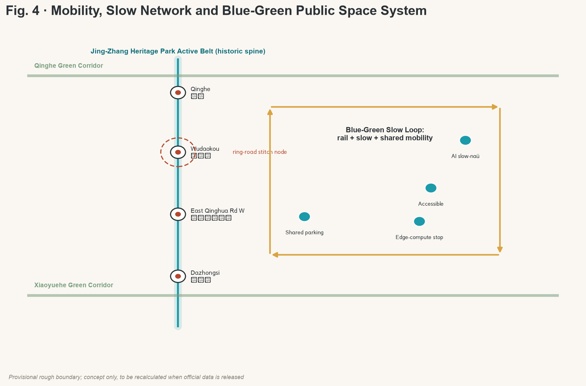

Jing-Zhang AI Belt · Offline Visual Dashboard
1 · Concept: Jing-Zhang AI Belt (The Intelligent Pulse of Jing-Zhang)
Using the century-old Jing-Zhang Railway as the spiritual prototype, the proposal translates rails into innovation chains, stations into innovation nodes, sleepers into factor supports. The naming system runs on the railway motif: three cores — Engine Yard, Origin Depot, Junction; two wings — Dispatch Wing, Test Wing; overlaid by the blue-green-slow compound loop, forming the Belt-Cores-Wings spatial frame.
2 · Figures




3 · Overview map (Total scope)
Overall design area 11.41 km²; key areas 368.4 ha distributed along the Heritage Park in three cores + two wings.
4 · Land use partition
Six non-overlapping strips that fully cover the boundary, from north to south: blue-green & heritage, R&D (Engine Yard), public & talent (Origin Depot), residential (Junction fringe), commerce & industry (Junction), south extension.
5 · Buildings
Building scheme grades retain / renovate / update / new-build. Control metrics (FAR / height / density / setback) await official regulatory planning, currently marked pending official data.
Renewal Project List
| ID | Project | Type |
|---|---|---|
| JZ-01 | Heritage Park slow-network break stitching | Public space / transport |
| JZ-02 | Engine Yard Qinghe innovation frontage | Blue-green / industry |
| JZ-03 | Origin Depot transformation street | Renewal / service |
| JZ-04 | Junction four-quadrant connectivity | Station / slow |
| JZ-05 | AI public service & edge-compute node | New infra / public service |
| JZ-06 | Global AI Activity Week public route | Operation / brand |
| JZ-07 | Origin Stele at Qinghua-yuan Station | Culture / landmark |
| JZ-08 | Open-source showcase gallery | Culture / showcase |
6 · Key metrics and evidence
7 · Self-check state
The package passes finalize + self_check: deterministic / spatial / visual / professional evidence reviews. Organiser-side data gaps (official polygon, regulatory controls, municipal data) are recorded in assumptions.
8 · Sources
Primary sources: Pre-qualification Announcement of the Centennial Jing-Zhang AI Innovation Belt Urban Design International Open Call (Beijing Municipal Bureau of Planning and Natural Resources, Haidian Branch); MOHURD Urban Design Measures & Control-Detailed-Planning Procedure; MNR Land-Use Classification Guide; provisional rough boundaries (brief/site-package/geometry/provisional_boundaries.geojson).
9 · Assumptions
(A-BOUNDARY-001) overall design area and three key areas use provisional polygon; (A-CONTROLS-001) FAR / height / density / setback await official regulatory planning; (A-DATA-001) road / rail / municipal / heritage / public-service data gaps are listed as pre-conditions for formal deepening.
10 · Evidence chain
Control metrics (FAR/height/density/setback) await official regulatory planning; performance metrics are design targets, not approvals.
11 · Task coverage
| ID | Task | Evidence |
|---|---|---|
| agent.1 | Belt-level concept and function frame | Figs 1, 2, 3 |
| agent.2 | Full-stack indigenous innovation and ecosystem | proposal § ecosystem |
| agent.3 | AI+ scenario paradigm and vital city | 10 cards / 3 scenes / 5 personas |
| agent.4 | AI public space and pilgrimage landmarks | 3 landmarks + component library |
| agent.5 | Cultural narrative | Ren narrative + international comms |
| agent.6 | Global activity system and long-term operation | Global AI Week / dev community |